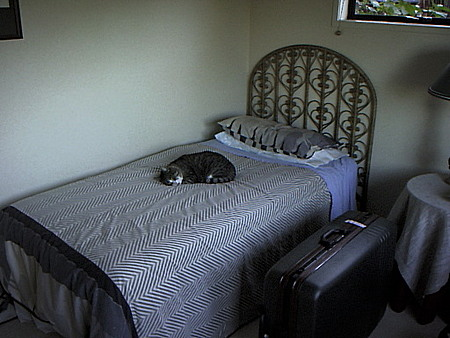
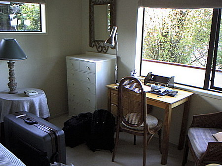
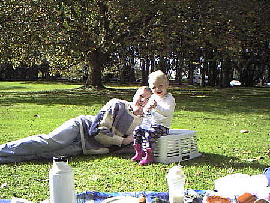
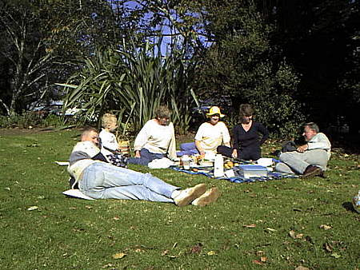
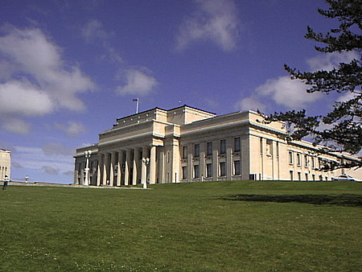

留学日誌
99年5月 オークランドで語学学校の始まり
5/07(FRI)
10:20、オークランド空港、国際便の到着エリアにてジョー・ハーマン夫人の出迎えを受ける。とりあえず夫人の家に車で連れて行ってくれる。２階のきれいな部屋を使わせてもらうことになる。日本の基準からすると大きな家であるが、周りと比較するとそれほど大きい部類には入らないようだ。


少し休んだ後、語学学校までの道のりを車で案内してもらう。バス停の位置、バスの乗降の方法など。学校まで行き、オークランド大学構内のニュージーランド銀行にて口座を開く。その後ウォーターフロントの魚屋、市中心部のショッピングセンターにて食材を購入。カレイ２尾、ムール貝、何かの薫製、などなど。驚くほど安い。日本の魚の６～７割程度の値段。しかも新鮮である。そして家に帰る。
ようやく荷ほどきにかかり、なんとかトランク、デイパック、ＰＣバッグの荷物をクローゼットとタンス、勉強机にしまい込む。どっと疲れが出てちょっと眠る。
ハーマン夫人に起こされて夕食。頭が完全に寝ている。夕食はカレイのムニエルとムール貝のゆでたやつ、トマトの炒めたの、などなど。 夕食後、人気テレビドラマ、2 fat ladies を見る。雑談した後で、父に電話する。ＫＤＤの国際テレフォンカードが役立った。
シャワー浴びてどっと疲れてすぐ眠る。
5/08(SAT)
朝７時起床。９時まで身の回りの整理、パソコンセッティングなど。シリアルの朝食をとってから、近くの八百屋まで夫人と車で買い出し。昼食はうどんを作る。麺のゆで方に疑問があったがなんとか協力して見事なうどんを作った。どんぶりを温めておくのがコツ。見てくれは今一だが、味はバッチリ。
昼食後、少し単語の勉強。すると、ジョーさんの友人であるロレーン夫人がギャラリーに連れていってくれ、レイ・ジョージ氏の独特の焼き物（ポテリー）を見せてくれる。とても味わいのある焼き物の作品が数多くあり、高い物では1200ドル、小さな物で300ドルくらいであった。芸術家はすばらしい、しかし、その世界は厳しい。
家に戻って単語の勉強のつづき。
夜になり、ジョーの息子さん夫婦が赤ちゃんを連れてやってくる。ジェレミーさんとエリカさん、娘さんのルーシーちゃん。ルーシーは１８ヶ月の年齢。まだあまり喋れないので相手にとって不足は無い。（笑）
楽しい晩餐と会話を楽しむ。１１時前に疲れて寝る。
5/09(SUN)
朝寝して９時半に起きる。着替えてポーチの掃除。パンと目玉焼きの朝食。掃除の続き。午後はピクニックに行く予定。隣家の夫人と話す。 今日は母の日なので、昔作った英語の歌を便箋に清書して、ジョー夫人にプレゼントする準備をする。文法を確認しているとあっという間に時間が過ぎて、息子さんのジェレミーさん夫妻が訪ねてくる。
近くのコーンウォールパークにて奥さんのエリカさんのご両親（バーノンさんとプリシラさん、いずれも定年退職されて、近くで暮らしている）と落ち合い、ピクニックとなる。


手作りの料理（マフィンのサンドイッチ、ソーセージとマッシュルームの焼いたの、お茶など）がとてもおいしい。ジョー夫人の孫であるルーシーはまだ小さくてボール遊びができないので、お父さんのジェレミーとサッカーをする。運動不足で足が思うように動かない。
疲れて休んでいると、小さな男の子が一人でサッカーをしているので強引に割り込んで相手をしてもらう。トモアキ君といい、お母さんはＮＺの女性、お父さんは日本人だそうだ。年齢は５歳。英会話の相手にとって不足は無い。（笑）
トモアキ君が当地で人気のあるラグビーのスター選手を教えてくれるがさっぱりわからない。しばし、パスやドリブルをしてぐったり疲れ久しぶりにスポーツで汗をかく。明日の朝の筋肉痛が怖い。
こちらの季節は秋なので、風が涼しい。雲間から日が出ると汗ばむほどであるが、日が陰るとセーターが欲しいほど肌寒い。頻繁にフリースのジャケットを脱いだり着たりしていると、ルーシーのお祖父さんが笑う。ニコニコと紹介されてあいさつするが、さっぱり名前を覚えられない。これからしっかり覚えることにしよう。
近くではたくさんの家族連れがピクニックを楽しんでいる。といっても公園があまり巨大なので、混雑している雰囲気はない。日立のコマーシャルでおなじみの「この木何の木」のような巨大なキノコ雲型の樹木が何本かある。感激。その他の木も例外なく巨大である。中国系、東南アジア系、東欧系、南米系、アフリカ系、そしてアングロサクソン系。オークランドの公園の日曜日は人種の見本市のようである。世間は狭い。地球はどんどん小さくなってゆく。
１時から２時半まで公園で柔らかな時間を過ごし、雲が多くなってきたので解散する。家でシャワーを浴びて昼寝に落下する。４時半頃起きて中学校の英語の参考書を復習する。知らないことばかり。（笑）
いよいよ明日は語学学校へ入校だ。クラス振り分け試験もあるぞ。いやはや。
今日の夕食は麻婆豆腐、ジョーさんの得意料理である。低脂肪、高たんぱく質でとても気に入っているとのこと。彼女の味付けは比較的薄めで、かなり日本人に近いような気がする。何十冊も料理の本があり、腕前の方はこの数日で感動したほどの折り紙付きなので、今後の生活に不安はない。とてもありがたい。
故郷の実家では、お茶摘みの作業が間近なので、そんな話題を楽しむ。考え考えであるが、正しい語順、正確な発音で話すことを心がける。むろん身振り手振りは不可欠である。
夕食後、デザートに梨をいただく。西洋梨ではなくて、日本の梨である。訪ねると、ＮＺ産であり、日本に輸出しているとのこと。我が国の農業の将来、食糧自給率の低下に心を痛める。ええんかやぁ？
今夜のテレビ映画は、ロビンウィリアムスの「バードケージ」。字幕無しだと１５％ほどしかわからない。しかし前にも見ているのでおよその筋はつかめる。役者は偉いなぁ。ジョーさんと二人で爆笑する。ふと、西洋の諺を思い出す。曰く、
「結婚は鳥かごのようなものである。外にいる鳥はいたずらに入って見ようと試み、中で暮らす鳥は抜け出そうともがく.....」
途中、まじめなドキュメンタリー番組をちらちらと見る。世界中で活動するキリスト教の牧師さんたちの記録である。札幌在住の牧師さんのことが放映されていた。なんだかんだ言ってもこれらの牧師さんたちの布教活動は感心である。日本のお寺の住職諸氏も見習うべきである。戒名付けてウン十万円はいくらなんでも.......。
映画が終わると１１時少し前。寝る前に忘れずにジョーさんに詩をプレゼントする。とても喜んでくれて、
「素敵な母の日だったわ」
とおっしゃる。
故郷で一人暮らすお父さんへ、親不孝の息子でごめんなさい。父の日にはなんか考えるからね。（笑）
電話を借りてＫＤＤのカードで兄、おばの家へ電話する。声があまりに近いので驚く。隣家と話しているようである。
エジソン氏とベル研究所に感謝。人間はエライなぁ。
僕のベッドを占領しているネコのダッチを押しのけて眠りに就く。

5/10(MON)
初登校の緊張のせいか、５時半に目が覚める。６時過ぎに起きて日記を書く。こうして日本の言葉で考えて、日本語の文章を日本語のシステムのパソコンに書いていると、日本に居るかのようである。
姪の愛ちゃんがこの夏、カナダに１０日程度のホームステイをするそうなので、アドバイスを少し考えて書き留める。
７時には明るくなる。雲が南に登ってゆく。天気が悪くなりそうだ。
学校から６時前に帰る。初日のオリエンテーション、学校周辺の見学、実力診断テスト、そして午後の授業で疲れ果てたので、おいしい夕食もあまり箸が進まない。復習しようと思うが机で昏睡する。シャワー浴びてベッドに倒れ込む。知恵熱が出そうである。
5/11(TUE)
午前中の授業に出る。いろいろな国籍の若者がいる。みんな若いので、高校時代にタイプスリップしたようである。白人系の人もいればアジア系の人もいる。バックトゥザフューチャーのエキストラになったような気分。みんな元気良く、答えを間違えるのに臆することもなく、どんどんと使えるだけの英語を使って自分のことを話す。押しの文化である。大和民族の謙遜、謙譲、おしとやかさはここでは通用しない。

今日も昼食はオークランド大学の食堂。サンドイッチの大きいの２パックとリンゴジュースで5.25NZ$（約350円）。貯金を取り崩しながら生活していると思うと身の引き締まる思いである。若いときの苦労は買ってでもせよ、というが、もうあまり若くないのも事実である。まぁ、青春は心の若さであるとも言うし。

午後は、ＮＺの移民政策に関連したトピックで学ぶ。みなさんがそれぞれ移住するとしたらどこの国が良いかと先生が尋ねる。スイス、オーストリア、カナダ、ＮＺなどの人気が高い。ＮＺと答えたら、釣りができるからだろうとすぐに先生に逆襲される。彼女の旦那さんは週末ほとんど家におらず、私はフィッシング・ウィドウ（釣りによる未亡人）だと言って豪快に笑った。このフラァ先生は、イギリス＋アイルランドの家系。結構訛が強いが、二日目でだいぶ慣れた。
クラスメートの先祖に関しての話題が盛り上がる。イタリア系ブラジル人、チェコ系ブラジル人、中国系タイ人、純日本系日本人などがいる。
私も純日本系だと思うが、いろんなところでお前の先祖には東南アジア系、もしくはチベット系がいるはずだ、などと真顔で言われる。（笑） シンガポール空港では売店の店員にかなりしつこく追求されたこともある。
ホームステイ先の家族に、かれらの先祖のことを尋ねてレポートせよという宿題が出る。いやはや。
今夜はジョー夫人にインタビューである。
5/12(WED)
何とか学校も慣れてきたが、まだ授業にはとまどいがある。英語の文法を英語で学ぶのはとても効率的だと思うが、体と脳味噌がついて行かない。５分前に習った単語をもう忘れている。若者はすごい。鉄は熱いうちに打て。冷めてなまくらになったアタマを引きずって午後の授業に挑む。マオリ族の歓迎の踊りを教わった。太鼓のばちのようなバトンを叩いたり相手の人に投げて交換したりして、とても面白かった。
夕方バス停を一つ前で降りてしまい、しかたない、まぁ歩くかと思ったら公衆電話があったので、ホキティカのフィッシングガイドのブリントさんの家に電話する。息子のディーン君が出たので、オークランドの語学学校で元気にやっていると伝えた。
家に帰って復習しているとブリントさんから電話があった。とても懐かしく思えた。先々月送ったビデオも無事着いているそうだ。やれやれ。
明日の午後の授業では、先生が美術館見学に連れていってくれるそうである。
5/13(THU)
長い長い午前中の授業を終えて、昼ご飯のサンドイッチを買い込んで校舎の前に集合する。今日の午後の授業はオークランド博物館の見学である。担任のフラァ先生に連れられて小学生のように私たちのクラスメートがぞろぞろと歩いてゆく。ミン君（韓国）、タニ君（日本、オークランド在住）、ユミノ嬢（日本）、フィリップ君（ブラジル）、？？嬢（日本）、マユコ嬢（日本）、パウィーナ嬢（タイ）などである。
学校を出て、プリンセス通りを南へ向かい、オークランド大学の中を抜けて急坂のグラフトンロードを下ると正面に広大な森が見えてくる。これがオークランドドメイン（ドメインはしいて訳せば一帯とか緑地というところか？）である。
日本の感覚からするとあまりにも広大かつ美しい公園というか原生林というか、とにかく素晴らしい場所である。例外なくよく手入れされた芝生沿いの小道を登っていくと噴水のある池に出て、その向こうの小高い丘の上に、巨大なパルテノン神殿を連想させる建物が建っている。オークランド博物館である。

入場料の５NZ$（約350円）を払うと、ちょっとしたホールに案内され、１時30分から始まるマオリ族の歓迎のレセプションが始まる。屈強な男性３人とチャーミングかつ豊満な体躯の女性４人によるダンス、歌、演舞、武闘術の試技などが約45分にわたり繰り広げられた。彼らのよく響く声と見事なハーモニーに、およそ40名の来館者はみな、いたく感動させられた。最もハンサム、かつ見事に鍛え上げられた肉体を誇る若者は、ラグビーの選手だそうである。納得。
続いて、２階の展示（ＮＺの自然、地理、動植物）、３階の展示（第二次世界大戦そしてその後の戦争に関した展示）を見る。あまりにも内容が豊富であり、丸１週間泊まり込んでも飽き足りないと思われる。今度、天気の悪そうな日曜日に出かけるとしよう。
３時半頃に一同は１階のカフェに集合し、解散となる。まだランチをとっていなかったので、そこで食べる。売店に寄って、「オークランドのフィールドガイド：その自然と歴史的遺産の探訪」と「ニュージーランドの野生生物」という本を買う。併せて48.9NZ$（約3400円）である。この本でぼちぼち市内近郊の名所を訪れるとしよう。バスの定期もあるし。
博物館を出ると、西側に広大な芝生のグラウンドが広がっている。あまりに見事なので言葉も出ない。こんなグラウンドでサッカーができればまず選手冥利に尽きると言えよう。のんびりと犬を散歩させている人々が多い。すべて放しているので奔放に走り回っている。野田友祐氏は、日本では犬と子供があまりにも束縛されていると書いているが、けだし真実である。
博物館の後ろに虹がかかっている。オークランドでは虹がひんぱんに現れるようだ。今度は虹鱒を釣らねばなるまい。（笑）
5/14(FRI)
午前中の授業で星占いを習う。私の星座：牡牛座はTAURAS（トーラス）だそうだ。フォードのワゴンのような名前である。突如、アンジェラ先生が、
「オー！、ゴウ！、今日はあなたの誕生日ね！」
と声を上げた。彼女は生徒みんなのリストを持っているのだ。いっせいにクラスのみんなが声を揃えて
「ハーピバースディ トゥーユー！」
と合唱してくれる。こうして歌って祝ってもらったのは、生涯で始めてである。感謝、感激。
星占いの次は手相占いを習う。ライフライン（生命線）、ハートライン（感情線）、ヘッドライン（頭脳線）などがある。となりのクラスメートと手相を見合っては、英語で表現する。いやはや。
昼休みには、ホームステイの相談役であるリサ嬢がわざわざカフェのテーブルまで歩いてきてくれて、誕生日おめでとうを言ってくれた。これまた感謝。舞い上がらないように気を付ける。（笑）
金曜日は午前中の授業であとは自由時間。我らが日本人の新入生４人組、ヒトシ君、カズノリ君、ショーコ嬢、そしてゴウは、今日の午後に行われる我が校とよその学校とのサッカーの対抗試合を応援に行くこととなった。おなじく新入生のオサム君が出場するのだ。試合場は昨日の博物館横の見事な芝生のグラウンドらしい。一同いそいそとランチを済ませ、博物館への長い坂の散策道を登っていく。
グラウンドに着いたときにはすでに前半もあと10分となり、我がランゲージインターナショナルは３対１で負けている。守備的ＭＦを務めるオサム君は小学生時代から大学までサッカーをやっていたそうで、驚いたことにちゃんとユニフォームとスパイクを持ってきている。芸は身を助けるなぁ。
我がチームが１点返して３対２となったところでハーフタイムとなる。オサム君はゼイゼイいいながら帰ってきて、ペットボトルの水を飲んでいる。別の語学学校で学んでいる若者（静岡県出身）が、しげしげと私の顔を見て、
「本当に日本人ですか？」
と、２度尋ねた。（笑）
我がチームのキャプテンは、英語の先生でもある？？氏である。最初、生徒だと思って思わず対等の口をきいてしまって失敗した。イギリス出身とのこと。約20人の選手のうち、日本人が１／３ほどいるようだ。けっこう多い。あとはまさに多国籍軍である。
こうして異国の地の芝生に座り、体格が良くなったとはいえ小柄な日本人がむくつけきガイジン選手とボールを争っているのを見ると、つくづくナカタ選手、カズ選手、モリヤマ選手などの偉大さが身にしみてわかる。あたたかいコタツに座り、ビールを飲みながらテレビを見ている諸氏、諸センセイ方には好きなことを言わせておけばいいのだ。
「がんばれナカタ、がんばれカズ、がんばれモリヤマ！！！」
故国を離れて戦う孤独な戦士たちに声援を送る。今度試合があったら入念なウォームアップとともに参加することにしよう。心臓発作だけは避けたい。
ちなみにこの試合の参加費は、グラウンド使用料に充てる２NZ$（約140円）であった。
残念ながら我がチームは５対２の大差で破れ、とぼとぼと帰り来る選手たちに拍手を送るが、みなしょぼんとしている。相手チームには強力なフォワードと堅いディフェンダーがいたのだ。次回に頑張ろう。 足がつる寸前まで疲労困憊したオサム君とともに、一同はダウンタウンのハンバーガーショップに向かう。マコちゃんは昼飯抜きで90分を戦ったのだ。えらいえらい。
再び大学横のアルバート公園を通り、ダウンタウンのバーガーキングに乗り込み、一番奥のラウンドテーブルを占拠して心ゆくまで日本語でしゃべる。（笑）
バーガーキングでは、壁に貼られた往年の映画スターのポスターを眺め、天井のスピーカーから流れてくるオールディズに心をほどく。沁みわたるギターの調べとともにミセス・ロビンソンが流れてくるが、若者たちは誰も曲名を知らない。（笑） しかし、「卒業」のラストシーンだけは印象が強かったらしく、おぼろげながら覚えているようである。 オサム君はハンバーガーを飲み込み、色のきついファンタ系のフリードリンクを幾度と無くお代わりしている。
日暮れとなり、一同と店の前で分かれ、バスで家に帰る。今日はちゃんと家の前のバス停で降りることができた。（笑）
5/15(SAT)
いよいよ週末である。朝寝坊しないように起きて、朝食をとる。午前中に手紙を３通、ファクスを１通書き上げる。午後になり、少し前までここに住んでいたハン君が、友人のミン君を連れてくる。今日からミン君はここでホームステイを始めるのだ。下宿仲間という訳である。彼が釣り道具屋で買ったという釣り竿を見て、
「あーぁ、俺も釣り竿を持ってくれば良かった....」
と、つくづく後悔する。後悔後を絶たず。
何か釣れたか？とミン君に尋ねると、いやぁ小物ばっかですよと笑って答えた。
食堂のテーブルで、ジョー夫人、ミン君、ハン君、私の四人で午後のお茶を楽しむ。
夕方、ジョー夫人の息子さんのジェレミーが電話をくれて、５時半から釣りの番組をやっているからすぐに見て見ろと言われる。慌ててテレビをつけると、タウポ湖での虹鱒釣りをやっている。湖の流れ込みにボートをアンカーし、シンキングラインでストリーマー、エビの形のイミテーションフライ、スモルトのフライなどをスローリトリーブする釣法のようだ。どれも型揃いの虹鱒が銀白の鱗を輝かせながら深い湖底から浮かび上がり、幾度と無くドラグを鳴り響かせる。こういう場面はまことに体に悪い。
別の釣り人は、かなり深いポイントをベイトリールとタスマニアンデビルのルアーで攻めていた。ほとんどトローリング状態である。こうしてみると、やはりドライフライはエキサイティングである。
夜は夫人とテレビを見て過ごす。ミン君は、夕べ夜更かししていたらしく、早々と眠りについた。僕らも早々にベッドに入る。
5/16(SUN)
朝起きて、家の前のベランダ？の掃除をする。ポプラの大木からはらはらと落ちる枯れ葉がたまっているのだ。ミン君も起きてきて手伝ってくれた。カゴに２杯も落ち葉が出た。掃除の後、夫人と３人で朝食。スクランブルエッグとトースト。
ミン君は故郷の韓国では体育の先生と言うことで、スポーツは万能。なかでも水泳が得意らしい。今日は街のスイミングプールで3000mほど泳ぎ、その後教会へ行くとのこと。
朝食後、自室に戻って本を読んでいると、ぷっつり糸が切れたようにベッドに倒れ込む。目が覚めると１２時半。慌てて起きて階下の食堂へ行くと、すでにランチの準備が整っている。
ほどなく、ジョー夫人のいとこのバーバラ婦人、その夫のマイケル氏、友人のローズマリー婦人、その夫のボブ氏、その娘のマンディ婦人、近くにお住まいのタップ氏などが勢揃いする。ジェレミー、エリカ、ルーシー一家もやってきた。ベランダのテーブルで立食形式のランチが始まる。みなさらさらと自己紹介などをして、会話に花が咲く。こちらはギクシャクと自己紹介をし、その花にかじりつくようにして内容を聞き取る。えらい疲れる。（笑）
ランチが終わり、片づけをして自室に戻ると再びベッドに溶け込み、猫のダッチ君とベッドの上で夜まで寝込む。目が覚めると８時半。 今日の日曜日は寝てばかりだった。まぁ、最初の一週間で、目に見えない疲れがたまっていたのだろう。
明日から新しい週が始まる。頑張ろう。
5/17(MON)
月曜の朝、勢い込んで学校へ行く。みんなはどんな週末を過ごしただろうか？登校のときには「ワルキューレの騎行」がテーマソングであるが、下校のときには「葬送行進曲」に変わっているのがつらい。
語学学校の窓口には、今日から入校する新人が列を作って待っている。日本人の若者が多い。エラそうに、歓迎の挨拶を英語でぶちかます。『ふっふっふ。もう新米じゃないぜ......』
午前の授業では、週末なにをしたかという会話の練習が始まる。スイス人のお嬢さん、クラウディアとニコルは、週末にかけて学校主催のマオリ族の伝統的居住地域、マラエの見学ツアーに行って来たそうで、その話題で盛り上がっている。韓国から来ているジェームズおじさんは、ゴルフのシングルプレーヤーだそうで、仲間４人とゴルフに行って来たそうである。ゴルファーにとっても、ＮＺはまずまず、天国であろう。
文法では、willの使い方、FirstConditionalを習う。日本語では何というのか知らないが、調べる気にもならない。すべて英語で行くしかないのだ。もし、○○であれば、△△は□□になるでしょう。というパターンをくりかえしたたき込まれる。
新婚ホヤホヤのアンジェラ先生は今日もごきげんである。
午後の授業では、我がＮＺコースに新人が二人入ってきた。スイスから来たアイリーン嬢と、日本から来たジュンイチ君である。アイリーン嬢は、カフェで働いていたそうで、尋常ではない魅力的な容貌をしている。日本ならモデルの仕事がありそうですね。用心用心。（笑） なぜか今日はフラァ先生がお休みで、代理のフォリーン先生が来ている。小柄な女性でとても発音がきれいだが早口なので聞き取りにやや苦労する。
学校生活に関連したカードが30枚くらい配られて、意味の共通するグループごとにまとめる作業が課せられる。ひととおりまとまると、生徒が答えてゆき、先生がそれを黒板に書く。
ユニフォーム（制服）、スクールバッグ、テキストブックなど、生徒の持ち物が読み上げられると、フォリーン先生は、
「アメリカの学校ではこの他に銃が要りますね」（笑）
などと鋭いジョークを飛ばす。
なかなか面白い女性である。
このあとで、ＮＺの教育制度に関するテキストを読む。いろいろと日本とは異なるようだ。アイリーン嬢と内容について確認しあうが、向こうもこちらもタドタドしい英語なのでらちが開かない。おまけに彼女の正面に接近して座っていると、教室にいるのかバーのカウンターにいるのかわからなくなる。（笑） いやはや。
午後、レクチャールームに座って、電子メールを書く。生徒にはメールのＩＤが与えられ、英文ではあるがメールが使える環境がそろっているのだ。兄に宛てて簡単な英文で数行メールを送る。まぁ中学２年生の姪っ子が訳してくれるだろう。
帰り道、大学の売店で切手を買って手紙を出す。航空便は1.50NZ$（約100円）、国内の郵便は0.40NZ$（約30円）である。以前に行われたＮＺ政府の激烈な行革で郵政事業もかなりの部分を民営、もしくは民営的に改善したと聞いている。
日本の郵政省のみなさんも、がんばってね。
家に帰り、復習をしてから夕食をいただく。今日はご飯、みそ汁、中華料理（豚肉団子の飾り蒸し）。テーブルだけ見ている限りは日本と何も変わらない。まことにうれしい。箸が動き、食が進む。舌と体は正直である。（笑）
宿題を済ませ、早々と眠りにつく。
5/19(WED)
今日はあまりに天気が良かったので、出発前に購入したデジタルカメラを持って学校へ行った。なんとか午前と午後の授業をクリアして、いそいそと下校する。今日はカメラを持って、歩いて家まで帰るのだ。ちょっとした冒険である。道がわからないのでバスの路線通りに歩くことにする。
大学前を通り、サイモンズ通りを南へ、キーバーパス通りを経てニューマーケットへ。さらにブロードウェイを抜けてグレートサウスロードへ。都合90分のウォーキングであった。途中、高速道路の高架橋、橋脚などを写す。職業病ですね。（笑）
マウナルイ通りでは鉄道と高速道路を跨ぐ歩道橋があったので、これも写す。なかなか美しい橋である。グリーンレーンまでくると、獣医さんの店やワインの専門店、懐かしの田宮のマークを飾った模型専門店などがあり、道草をする。世界に冠たる田宮のプラスチックモデルは日本人の誇りである。こりゃ大げさではないですぜ。（笑）
いつものバス停が見える頃にはバテバテとなってしまい、ほうほうの体で家にたどりつく。
今日の夕食は小さめのステーキ、トマトの焼いたやつ、野菜ソテー。めちゃめちゃ食が進む。ウォーキングでの減量とプラスマイナスゼロである。（笑）
郵便でインターネットへの接続申し込みの返信が来ていたので寝る前になってからジョーさんに電話線を借りて接続を試みる。指定されたパスワードで一発で接続できた。日本に残してあるメールアドレスに送られていた多数のメールを転送して読む。10年以上連絡の無かった人たちからの暖かい励ましのお便りをいただく。ありがたい。電子メールは偉大である。
が、しかし、新しいＮＺのアドレスでのメール送受信がうまくいかない。真夜中を過ぎてからようやく成功し、兄に宛てて短いメールを出して寝る。やれやれ。
5/20(THU)
午前中の授業では、いつものように和気藹々と授業が進む。アンジェラ先生は、今日が夫のアンドリューさんの誕生日だそうで、ラブラブ・ルンルン状態である。ごちそうさま。
午後の授業は、ＮＺに関する様々な話題を学ぶコースであるが、今日で終わりとのこと。来週からのクラス編成のアンケートが来たので、
１：ビジネスイングリッシュコース
２：イングリッシュ フォー エンプロイイー（就業者向けコース）
３：自然について学ぶコース
に○を付けて出した。
ところが、大学入学のための試験準備コースを受講するには、あと二つ実力ランクがあがらないとだめなことがわかり、愕然とする。まぁ、あせっても仕方ないから地道に行こう。なにせビルド、ビルトの区別も忘れてしまっているのだから話にならない。（笑） こんな実力でよく国を出てきたもんだと我ながら呆れる。賽子は投げられたのだ。
今日も快晴だったので、昨日とは違うコースで帰ることにする。グラフトンロードを下り、オークランド病院を過ぎるとオークランドドメイン（緑地？、公園？）の広大な芝生、グラウンド、遠くに浮かぶ博物館が見える。ここで暮らせたら天国の一歩手前と思えるような光景である。
ニューマーケットのホームセンター（ＤＩＹの店）、コンピュータ専門店などをのぞいてから、今日は半分をバスで帰る。くたくたである。
夕食はうどん。ジョーさんの料理の腕前は冴え渡り、こうして箸で食べている限り日本に居るかのような錯覚を覚える。多謝、多謝。
5/22(FRI)
今日の授業は午前中で終わり！ 半ドンである。あまりの快晴に、同期入学の日本人の友達、ヒトシ君とショーコちゃんとともに、ワントリーヒルツアーに出かけることとなった。
バスで私の家の近くまで行き、そこから歩いてコーンウォール公園まで。２km四方以上はある広大な公園というか緑地の真ん中に、一本だけ松の大木がある OneTreeHill は市民の憩いの場、また観光名所でもある。あまたの大木の中を抜け、牧草地を突っ切って近道をすると、以外と早く頂上に着いた。今日は例外的に風もなく、絶好の日和である。オークランド市周辺が一望に見渡せる。一同声もない。
帰り道では大勢の羊、雌牛の群が草をはんでいるが、観光牧場ではないので近づくとすぐに逃げてゆく。すべて雌牛だと思っていたら、中に１尾雄牛が混じっていて、にらんで近づいて来たのですぐ逃げた。 夕暮れが近づくとすぐに寒くなるので、お二人をダウンタウン行きのバスに乗るまで見送って帰る。万歩計のカウンターは16,000歩。
5/22(SAT)
今日は学校休みである。朝ゆっくり起きて、ジョーさんとミン君と三人で朝食をいただく。今日はあんたたちなにすんの？と聞かれたので、とりあえずダウンタウンへ行き、海岸沿いの路線のバスに乗り、魚釣りに適当な場所を探すつもりだというと、二人声を揃えてディボンポートへ行くといい！とアドバイスしてくれる。
それじゃあということで港町オークランドの玄関であるフェリービルディングに行き、ディボンポートまでの往復切符を買うと、7$（約500円）である。港に隣接した高層ビル、スカイタワーを後にして、フェリーがゆっくり進み出す。なぜかしらないが、ＮＺに来てからアタマの中で「岬めぐり」の歌が響いているのでまさにぴったりの光景である。
あっけなく対岸の桟橋に船は接舷した。ここがディボンポートかわからなかったがみんな降りるのでとりあえず降りる。（笑）
海岸沿いに遊歩道が整備されているので、向こうに見える小高い山目指してあるいてゆく。どうやらノースヘッドという場所らしい。
閑静な住宅街（オークランドの住宅街はすべて閑静である）を抜けて、ノースヘッド史跡保全地区に入る。ここは、海岸線にそびえ立つ小高い丘であり、先の大戦中には偵察・防衛の要所として用いられていたらしい。所々に監視哨や銃座が設けられていたようである。頂上近くには儀礼用の砲台も保存されている。オークランド港を対岸に望み、眺望のすばらしい場所である。昨日今日と高いところばかり来ている。バカと煙は高いところが好きらしい。
ぐるりと丘を回っていると、眼下に美しい浜辺と岩礁が見える。さっそく降りてゆくと、向こうの岩場で数人が釣り糸を垂れている。いそいそと近づいて見てみると、でかいオモリの上にでかい針を２本付けて、そこへでかい魚の切り身を刺してぶんぶんと振り回して遠くへ投げ込み、ひたすらアタリを待つという釣法である。竿は使わない。プラスチックのスプールというか輪っかにぐるぐると太い道糸を巻いただけのきわめてシンプルな釣り方である。
少し離れたところに竿を立てて待っている釣り人がいたので、話しかけてみる。狙いはタイとカウワイ。でもここではあまり数は釣れないらしい。しかし、カウワイがたまにでも釣れるとはうれしいことを聞いた。ああ！ 家に残してきた釣り竿とリールが恋しい。自分に正直になって持ってくるべきだった！（笑）
カウワイというのはテレビで見るとサバとマスを足して２で割ったような魚であり、なかなかのファイターであるそうな。フライ・ルアーの対象魚として人気が高いとのこと。
イマニミテイロ........。
再び海岸沿いの遊歩道を通ってフェリー乗り場まで来ると、古本屋があることに気づいた。これまたいそいそと入って覗いてみると、こぎれいな店内には閲覧用のイスまで置いてあり、至れり尽くせりである。 ついつい手が伸びてしまい、ＮＺの林業、環境と政策、地球にやさしい暮らし方、湖沼と川の生態、いかにして魚を見つけるか.....などしめて６冊を97NZ$で買う。約7,000円。買うばかりで読む方が追いつかない。リュックが重い。
夕暮れの近づいた秋の港に船は着き、ダウンタウンの雑踏に足を踏み入れる。スポーツ用品店でテニスボールを１個だけ買う。約170円。店の主人が、
「渋い客だなぁ」
という目で一瞥する。（笑）
おなじみの図書館、公園、大学を抜けてバス停へ。帰ると５時半であった。万歩計は15,800歩。よい運動であった。
5/23(SUN)
朝食後、これからの学習計画を立てる。聞く・話す・読む・書く どれも圧倒的に弱いのでまんべんなくカバーするような勉強方法を考える。ウォーミングアップの２週は過ぎた。いよいよエンジンをかけなければならない。
昼食前にジョーさんと家具屋へ行ってちょっとした引き出し付きのタンスを買う。日本の感覚からすると恐るべきアバウトさで作ってある。元建具職人の父が見たらさぞかし呆れることと思われた。普及品の家具のレベルはこんな感じだろうか？価格はけっこう安い。
昼食後、庭の古い株を掘り起こし、となりに新しい花木を植える。ミン君と二人でやったので速やかに作業は完了した。
隣家のご婦人が、
「オゥ！ ジョー！ 二人も庭師を雇って豪勢なことね！」
とジョーさんを冷やかす。ミン君の体格だと、ガーデナーというよりはガードマンといった方が正解である。
今日の午後もどっと疲れが出て眠り込む。
だれかの訪問のベルで目覚めると、松山さんがパイを持って訪れたようだ。ミン君の友達のハン君も来ており、５人で楽しい夕食が始まる。
メールをチェックして眠る。
明日から忙しい週が始まる。
5/24(MON)
午前の授業では、20世紀クイズ というのが出題される。
Ｑ１： 「一人になりたいの....」と言ったスウェーデン女優は誰か？
Ｑ２： 94年、ワールドカップでブラジルが優勝した時の開催国は？
Ｑ３： ビートルズが最初のレコードを出したのは何年か？
Ｑ４： 1990年にノーベル平和賞を受賞した大統領の名前は？
Ｑ５： 1946年に世界最初のコンピューターを開発した国は？
Ｑ６： オリエント急行殺人事件の著者は？
英語力よりも、年の功でいくつか正解をゲットする。若者たちにはわかんねぇだろうなぁ。（笑） 貯蓄を食いつぶして留学生活を送っているのと同様、かつての雑学の知識を食いつぶしながら勉強をしているのである。
電子辞書で単語を引いていると、 agreeも知らないの？ と台湾の女の子に真顔で聞かれて赤面する。（笑）
これだけ英語力が無ければあとは上昇する一方である。（笑）
故国の不景気は鍋底を脱したのであろうか？
午後は、クラス替えが行われ、ビジネスイングリッシュクラスに編入される。ポリーン先生の速射砲のような説明を聞くだけで精一杯である。２時間の授業が終わった瞬間、机に崩れ落ちる。（笑）
明日からどうなることやら.....
放課後、ダウンタウンに行き、カセットテープ３本と、リングファイルとを買う。しめて1150円ほど。
ふと見ると、ショーウィンドウにフライロッドが飾ってある。つい誘われて２階のロッド売場を眺める。セージの６番４psが約４万円。大学入試に合格するまでは、釣り具を買っている余裕はない。しかし良いアクションである。（笑）
奥から現れた巨躯のおじさんが、なんなら公園でリールをセットして振らせてやるぞと笑う。そうこなくっちゃ！
帰り道、途中でバスを降りて少し歩く。普段の通学では万歩計のカウンターは6000歩ぐらいしか行かないのだ。電気店の前で降りてひっそりと静かな住宅街を歩いてくると、10年くらい前の日産フェアレディが見事な状態で駐車してある。塗装、内装、ホイールなど、まずまずカタログ写真といって良いほどの程度の良さである。絶句。
静かな暮らし、豊かな暮らし、大人の暮らしがここにはある。
万歩計は１万と500歩。シャワー浴びて、宿題やって、ステーキの夕食をいただいてまた和訳。ＮＺロイヤルフォレスト・アンド・バード・プロテクションソサエティ発行の「地球にやさしい暮らし方」をぼちぼちと読む。
10時にメールをチェックする。遠方より便りあり。多謝。
クイズの答え
Ａ１： グレタ・ガルボ
Ａ２： アメリカ
Ａ３： 1962年
Ａ４： ミカエル・ゴルバチョフ
Ａ５： アメリカ
Ａ６： アガサ・クリスティー でした。
5/26(WED)
今日の午前中のクラスはテスト。ヒアリング、スピーキング、グラマー、ライティングとまんべんなくテストされる。
Badの最上級は？ という問いに、自信を持って the baddest と書いて、後の答え合わせの時に粉砕される。
結構自信を持って書き終えたものの、ぼろぼろとチョンボがあって、結局、中の上といった出来であった。
昼食はみんなとダウンタウンの中華料理屋さんへ行く。麻婆豆腐、ビーフチャーハン、などとりどりのランチが２１種類。どれも5.5NZ$（約400円）ぽっきりという安さである。ボリュームは申し分ない。お茶も出してくれる。ここで食べ付けたら大学の学食へは戻れない。
午後は、ポリーン先生のクラスでヒアリングテストとインタビューの練習。やれやれ。
5/27(THU)
午前の授業で昨日のテストが採点されて返ってきた。
グラマー 81%
作文 90%
会話 80%
であり、平均81%の出来であった。先は長い、ぼちぼち行こう。
今日も昼食はくだんの中華料理屋さんへ。ビーフチャーハンを頼む。満足。
午後はポリーン先生のヒアリングテスト。今一歩で正解を逃している。まだまだ修行が必要である。噛みつくようにして聞き取らないと解答が書けない。うーむ......。
夕方、ニューマーケットの商店街でバスを降り、ディックスミスという大型電気店へ行く。ノートパソコンからウォークマンへ接続するステレオコードを買う。約840円ほど。まぁこんな値段でしょうか？
5/28(FRI)
今日の授業でスイスから来ているニコル嬢が修了することとなり、カフェで修了証書の授与が行われる。一同拍手とフラッシュで祝う。彼女はこれから友人と落ち合って旅行に行くそうだ。一路平安、を祈る。
今日は午前で授業は終わり。中華料理屋からダウンタウンに向かい、アルバート通りを南下する。あまり目立った店はなく、ホテルが連なっている。図書館に入り、工学書・釣りの雑誌などをぱらぱらと見る。
その後、大型書店を探し、ＮＺの統計事典、オークランドの写真集などを買い込む。在庫整理の特売本がたくさんあり、お得な買い物であった。Ａ４のノート、フロッピーディスクも買う。政府刊行物のコーナーでは、ＮＺの環境白書もあったが値段が高かったので次回にする。
5/29(SAT)
今日は土曜日。ゆっくり起きる。ジョーさんが、お気に入りの古書店へ連れていってくれると言うのでいそいそとついてゆく。途中、ブラインドの専門店へ寄り、寸法と生地、色合いを注文して仕立ててもらう。こぢんまりとした店だが、各種のブラインドが揃えてあり、なかなかの見物であった。エルズリー競馬場を眺めながらオニフンガ商店街に向かう。ひっそりとたたずむその古書店に入ると、左右両翼に分かれた階上の陳列棚に圧倒されそうな雰囲気であり、独特の古本の匂いが充満している。
お世話になった庭師の近藤さんに贈るべく、ガーデニングの解説書と有名な庭園の写真集とを買う。また、ガイドブック、それにＮＺの遊歩道・散策道のガイドブックがあったので買う。２冊で20$、良い買い物であった。先週から本に大量の投資をしたので、今月の予算はすでにいっぱいいっぱいである。来月は緊縮財政になるであろう。
夜、テレビで往年のアクションスター、スティーブ・マックィーンの特集を放映していた。あまりの懐かしさに涙が出そうになる。
荒野の七人、砲艦サンパブロ、ブリット、ゲッタウェイ、栄光のルマン、ジュニア・ボナー、拳銃無宿（ＴＶ）、大脱走、タワーリングインフェルノ、人民の敵、などなど。日本の山村の少年は、彼のしぐさにそれはそれは憧れたものでした。ホンダのＴＶコマーシャルもちらっと出ていた。うーん、良い映画、良い音楽、良い本を創った人はエライ。
ディレクターもよく勉強していて、各映画の押さえどころをしっかり把握していたので嬉しくなった。
日本にも同様の番組があるのですが、作り方がお子さま向けなのと、やたら意味のないタレントを動員して意味のないコメントを吐かせるのが難点ですね。
5/30(SUN)
日頃の疲れがどっと出て、眠りこける。まるで眠り病である。
5/31(MON)
今日は月曜日。生徒も先生も、週末の疲れが出ているようだ。日本人のヒトシ君は、週末にワイヘキ島へ行ってボードセイリングなどを楽しんだそうだ。ショーコ嬢は、牧場での馬の世話や乗馬のインストラクターの仕事が見つかったとのこと。
10時半の休みに父に電話する。けっこう声が近い。安心安心。父も元気のようである。現地はまだ朝の７時半、これから朝食とのこと。 午後の授業では、ビジネスイングリッシュにて、スプレッドシートを習う。内容的にはお手の物だがヒアリングとスピーキングが付いていかない。ビジネスイングリッシュの教科書も買った。34$であった。
帰り道に郵便局があるのでそこで絵はがきと消しゴムも買った。ぺんてるのプラスチック消しゴムである。がんばれ日本製品。
知人に手紙を書こうと思うが、長文は苦手なので、絵はがきにする。１ドル80セント（約140円、絵はがき代込み）で日本まで届けば安いものである。絵はがきがなかなか大きくて素敵なので感心する。
帰り道では、必殺の近道も発見する。今日の万歩計は7000歩。
長い、長い最初の一ヶ月が終わった。
留学日誌 目次へ
サイトマップ
ホームへ
お問い合わせ